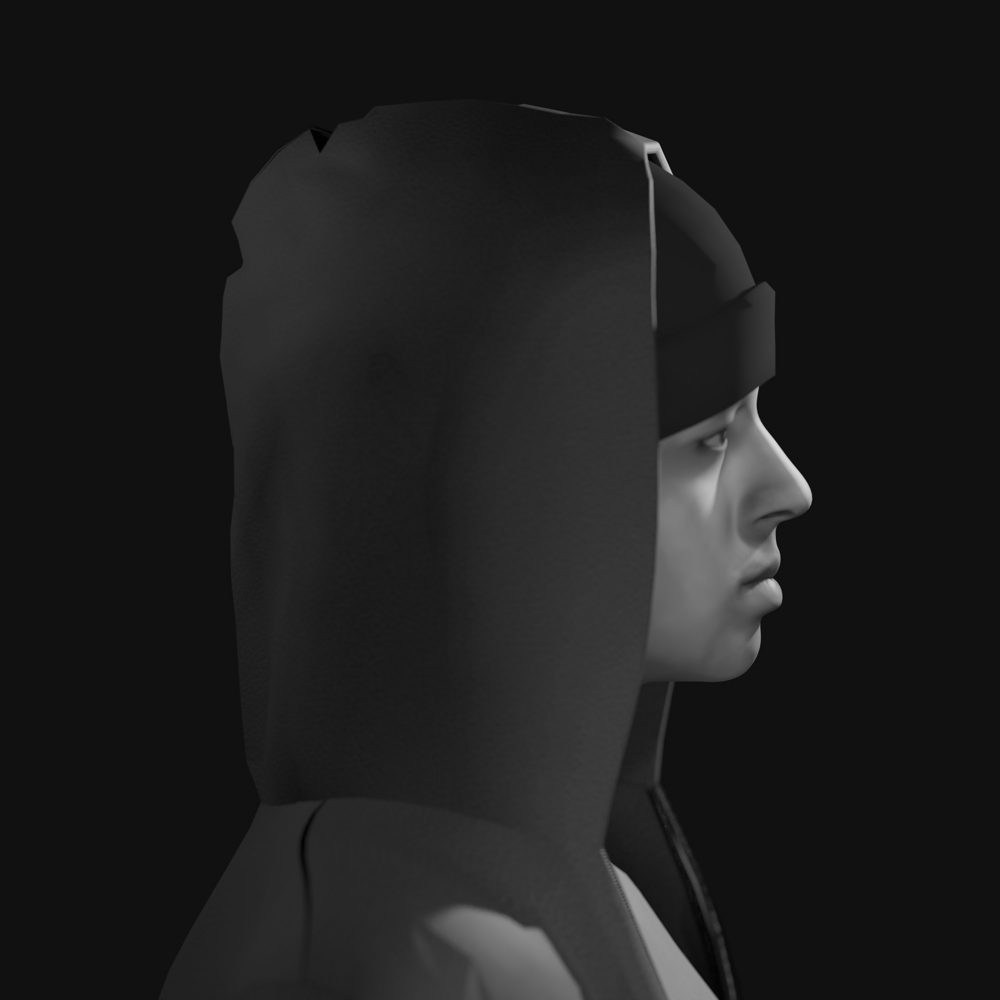

I was born in Brazil and moved to Peru since 5y. My mother tongue is Portuguese, then I learned Spanish and have used it for most of my life, then english. I love the Amazon River and the forest, but I am also fascinated by the cyspace, the matrix. I met my first computer in 2000, a Dell laptop brought to me by my father, an engineer from the Central Reserve Bank of Peru. I was definitely surprised by the possibilities of this tool and what I learned from it, so I stuck with the vice.
At 18, I entered the National University of Engineering to study architecture, I had a good time asking and proposing new models of architecture learning, creating forums, a magazine called "Kancha" and also having Richard Stallman on campus. On my believings, I'm refered constantly to open source, free software and liberation of knowledge to catalyze our human evolutionary process building a new era of community consensus.
In 2017, I discovered Bitcoin, but in fact I was busy creating and failing an application about art competitions, and it was not until December 2018 that I started to participate in algorithmic trading using machine learning and later giving a lecture on that at the Pontifical Catholic University of Peru. Now, I still do blockchain research and I also focus on 3D modeling.
Rarible
Sketchfab
Soundcloud
Github
Twitter
